Menyediakan berbagai macam jenis batik khas Indramayu
Batik khas Indramayu dengan motif kecil, rapat, dan berciri flora serta fauna seperti daun, burung, dan ikan.
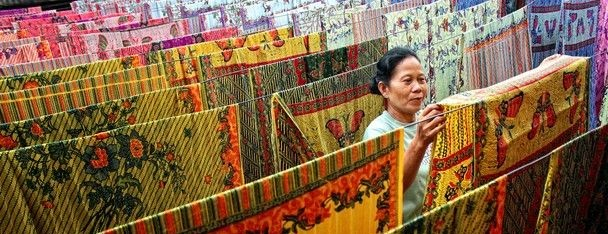
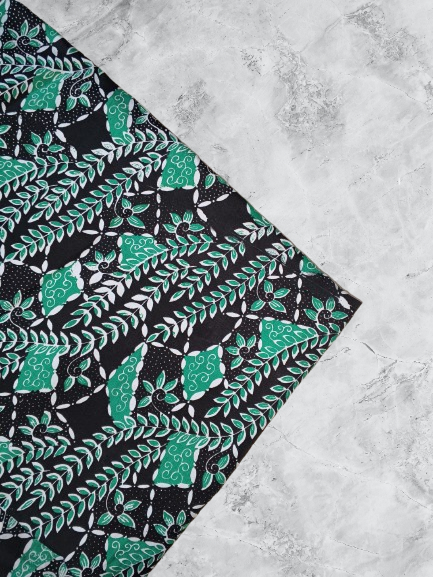
Motif Tangga Istana
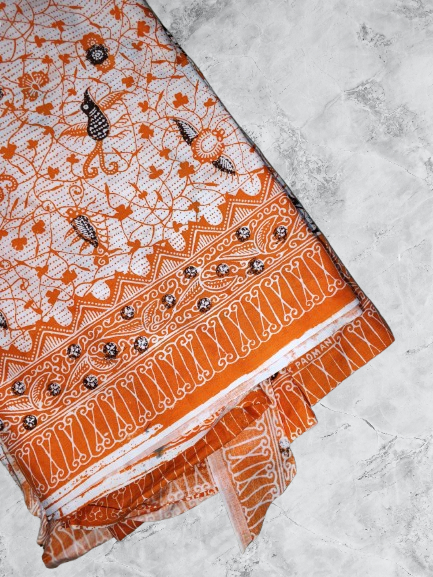
Motif Kembang Kapas
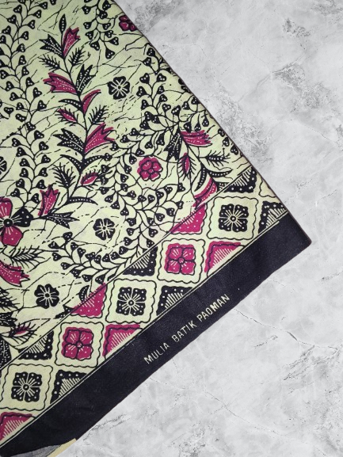
Motif Godong Asem
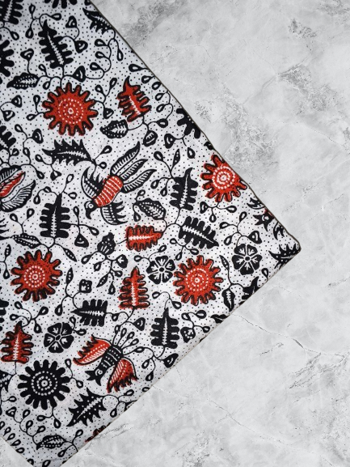
Motif Mangga Bambu
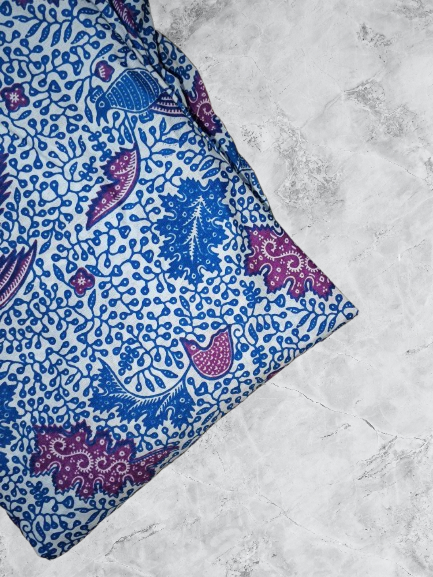
Motif Tangga Istana
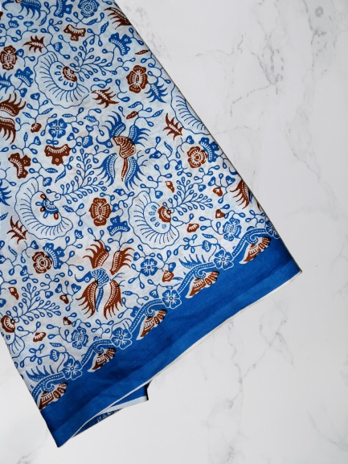
Motif Kembang Kapas
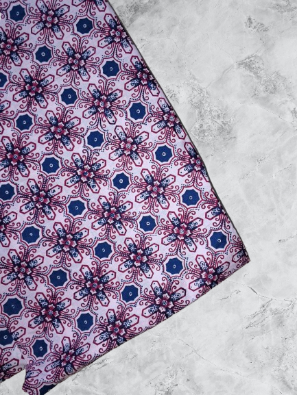
Motif Godong Asem
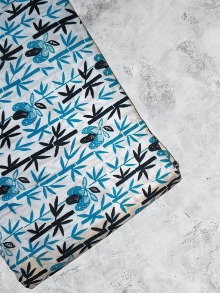
Motif Mangga Bambu
Kami melayani pembuatan kain batik untuk seragam instansi, kantor, sekolah dan lainnya.
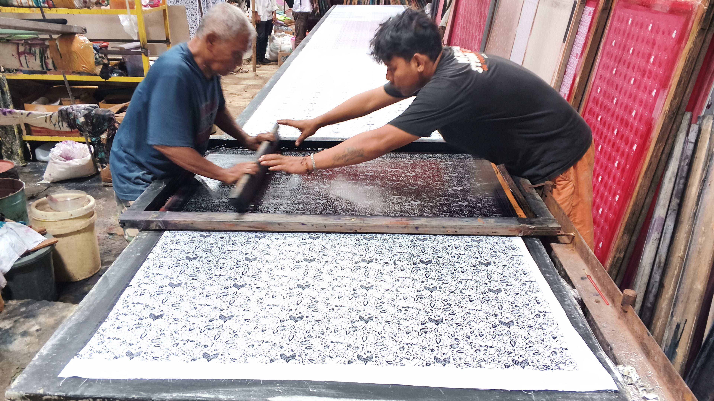
Kami juga menerima jasa jahit seragam batik baik untuk pria ataupun wanita. Anda tidak perlu lagi mencari penjahit seragam batik di tempat lain.
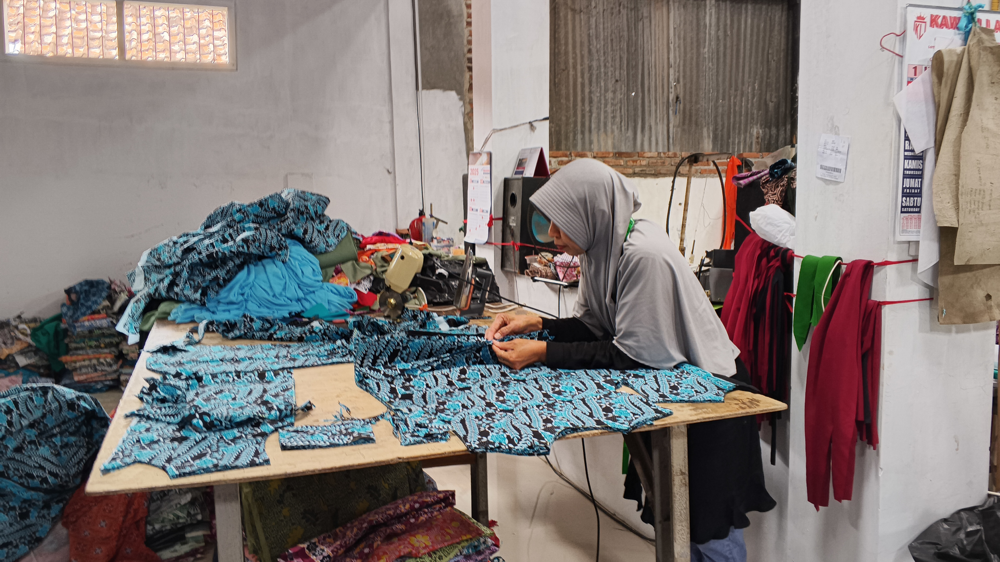
Kami melayani pembuatan kain batik dengan motif custom sesuai dengan kebutuhan anda.
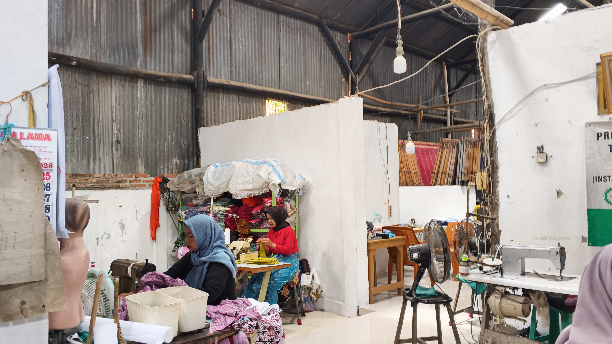
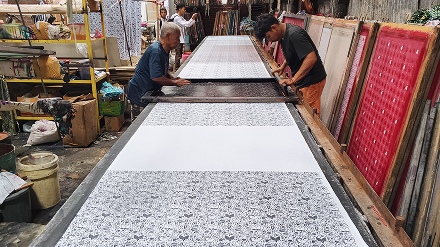
Batik Paoman merupakan salah satu batik khas Indramayu yang memiliki ciri motif kecil dan rapat. Usaha ini berdiri sejak tahun 2007 dan masih mempertahankan teknik cetak manual menggunakan cap